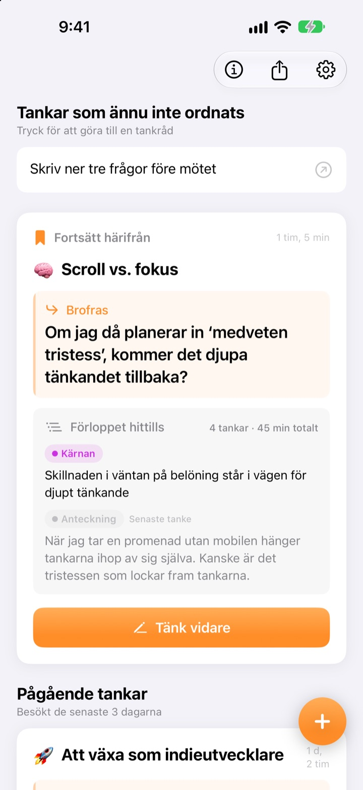
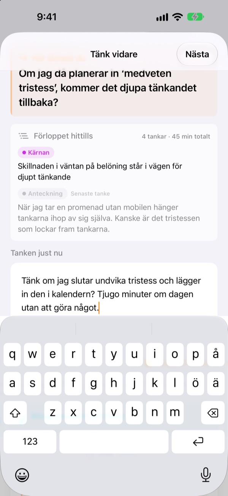
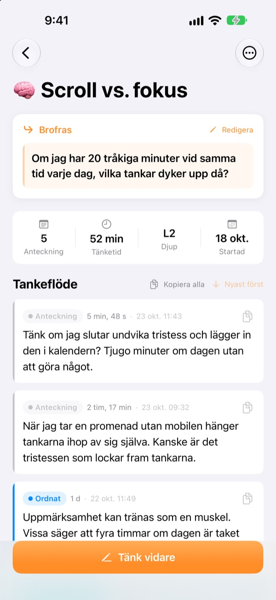
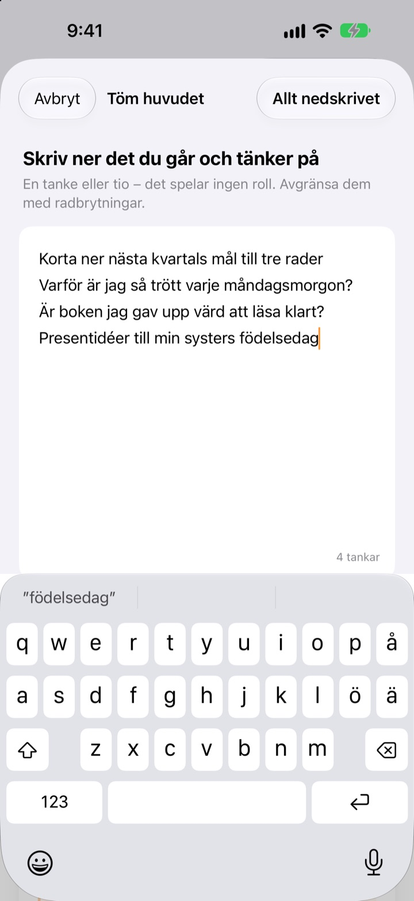

Gårdagens halvfärdiga tanke
fortsätter i dag där den slutade
När du slutar tänka lämnar du en rad att fortsätta från. Nästa gång du öppnar appen väntar den högst upp.
Alla funktioner är gratis. Inget konto, allt stannar på din enhet.

Testa att lämna en brofras
Skriv en tanke och lämna meningen du vill fortsätta från nästa gång. Det sker i samma ordning som i appen.
Var var jag nu igen?
Du öppnar en anteckning från förra veckan och hittar ett par slutsatser, men inte frågan du tänkte ta dig an härnäst. Så du börjar om från början. ThinkFlow får dig att skriva ner nästa fråga när du slutar, så att du börjar direkt där när du kommer tillbaka.
Din brofras väntar högst upp
Avsluta en tankestund med en rad: frågan du fortsätter med. När du kommer tillbaka står den meningen, kärnan hittills och din senaste tanke på ett kort. Inget behöver pusslas ihop.
Du ser den också i en widget på hemskärmen, och medan du tänker går tiden på låsskärmen och i Dynamic Island.

Från anteckning till kärna
Lyft varje tanke genom fyra nivåer: anteckning, ordnat, kärnan och sammanfattning. Du ser med en blick hur mogen den är.
Det du har sökt eller frågat om bifogas som material, skilt från dina egna tankar.

Töm huvudet först
Skriv ner allt som snurrar i huvudet, en rad per tanke, och välj den du vill jobba med nu. Den blir en tråd, resten väntar på startskärmen tills du trycker på det.
Tankar du inte rört på över tre dagar samlas under Tankar att väcka till liv.

Kom igång i tre steg
- 1
Töm huvudet
En rad per tanke, välj sedan den som ska växa.
- 2
Tänk vidare
Lägg till varje ny idé för sig, så blir den lättare att förfina sedan.
- 3
Lämna meningen och stäng
Nästa gång börjar du precis där.
Förfiningsnivå
- Anteckning
- Rå tanke
- Ordnat
- Ordnat en gång
- Kärnan
- Bara kärnan
- Sammanfattning
- Slutlig sammanfattning
Tryck på nivåmärket vid en tanke för att ändra det. Kärnan och sammanfattningar visas först på kortet när du kommer tillbaka.
Din brofras väntar högst upp
Måste jag skriva en brofras?
Om du har lagt till något, ja: skärmen Tänk vidare stängs först när du lämnar nästa rad. Har du inte skrivit något kan du bara stänga den. Knepet är att sluta medan du fortfarande har något att säga, inte när du har kört fast.
Vad är Tankar att väcka till liv?
Trådar du inte öppnat på över tre dagar samlas för sig på startskärmen, så att en nästan bortglömd tanke kan fortsätta från sin brofras.
Hur rapporterar jag en bugg eller föreslår något?
Använd Skicka feedback i appens inställningar, skriv till adressen nedan eller öppna ett issue på github.com/M1zz/ThinkFlow/issues. Allt är välkommet.
Är verkligen allt gratis?
Ja. Alla funktioner är gratis, utan reklam och utan konto. ”Stöd utvecklaren” i inställningarna är helt frivilligt och låser inte upp något.
Frågor eller synpunkter? Skriv till leeo@kakao.com.